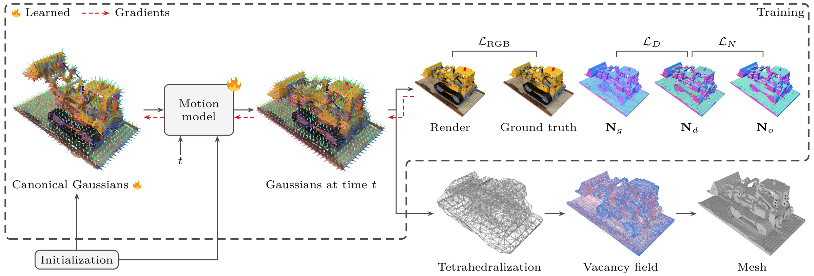
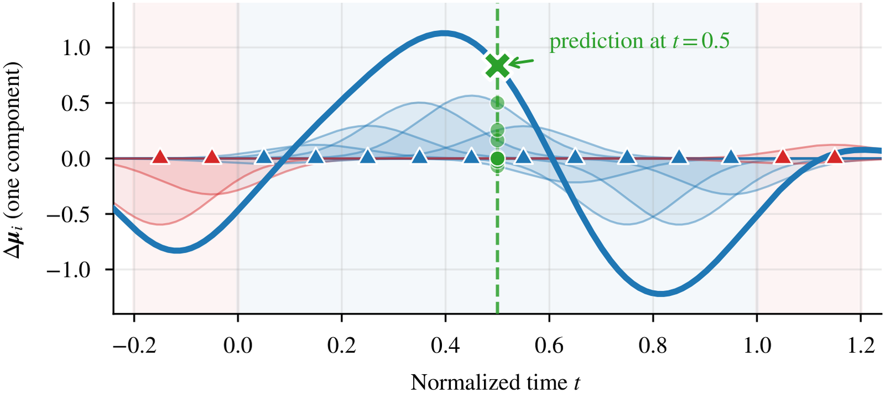
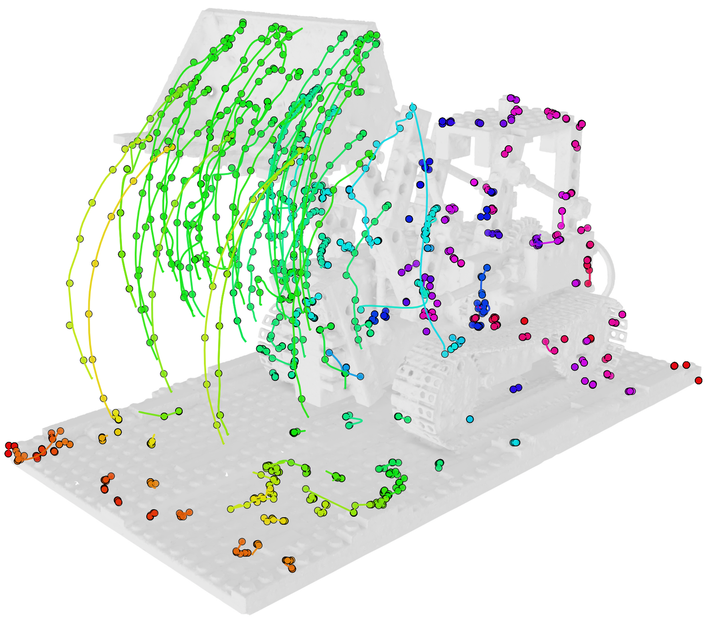

We present MEMO (a Mesh for Every MOment), a method that reconstructs the geometry of complete dynamic scenes, captured by multiple synchronized cameras, and extracts a mesh at every frame. Existing dynamic Gaussian splatting methods either model appearance alone or target isolated objects segmented by foreground masks, and all of them recover meshes by TSDF fusion or Poisson reconstruction, whose fixed grids limit the detail they can capture. At the core of MEMO is a per-Gaussian motion model inspired by Gaussian processes, which represents each Gaussian's position and rotation over time as a combination of temporal Gaussian kernels. The model keeps every Gaussian a valid surface element throughout the sequence and carries an implicit representation of the dynamic geometry, so a mesh can be derived at any time from a field defined by the Gaussians. Although common in real captures, large and fast motion poses a challenge that dynamic Gaussian splatting methods usually overlook. To account for it, we design a track-based initialization scheme that fits each Gaussian's initial trajectory to point tracks in closed form. We evaluate MEMO on Blender-Moments, a new benchmark of nine animated scenes with ground-truth meshes at every frame, and on two real-world datasets. MEMO reconstructs the most accurate geometry among state-of-the-art methods, and remains competitive in novel-view synthesis and training time.
The motion model translates and rotates each Gaussian and its oriented normal (arrows) from the canonical state to time $t$. Training backpropagates (red) $\mathcal{L}_{\text{RGB}}$, $\mathcal{L}_D$ between the geometric and depth normals $\mathbf{N}_g$ and $\mathbf{N}_d$, and $\mathcal{L}_N$ between $\mathbf{N}_d$ and the oriented normals $\mathbf{N}_o$. Mesh extraction follows Gaussian Wrapping: tetrahedralizing the pivots, evaluating the vacancy field at each pivot (red occupied, blue vacant), and recovering its 0.5 level set with marching tetrahedra.

MEMO gives every Gaussian its own motion over the whole sequence. Its position and rotation at any time are its base values plus displacements, each a weighted sum of temporal Gaussian kernels centered at learnable inducing times, a form inspired by Gaussian processes. Since the kernels cover the entire timeline, every Gaussian stays active at every frame with constant opacity and scale, and its oriented normal rotates with it, so the scene's geometry is defined at all times. Two extra boundary kernels beyond each end of the sequence keep the first and last frames as accurate as the rest.

Large and fast motion, such as swinging limbs or spinning parts, is hard to learn from photometric gradients alone, since they only guide a Gaussian toward nearby image content. Before training, MEMO links per-frame SfM points into 3D tracks spanning the sequence, with a Kalman filter, and fits each Gaussian's motion to its track in closed form. Training thus starts from trajectories that already follow the scene's motion.

To extract the mesh of any frame, MEMO evaluates the motion model at that time and follows the pivot-based extraction of Gaussian Wrapping. Each Gaussian spawns two pivots, the pivots are tetrahedralized, and marching tetrahedra recovers the 0.5 level set of the vacancy field the oriented Gaussians define. Training never extracts a mesh, which keeps it fast.
MEMO extracted meshes at twenty evenly spaced frames of each scene.
Pick a scene, drag to rotate, scroll to zoom, and move the slider to step through time.
The meshes are simplified to 150K faces (600K for Yoga) for quick loading. At full resolution they have 2 to 4.5 million faces.
Supported browsers: Chrome, Firefox, and Edge, Safari (M3 chip Macs or later and iPhone 15 Pro or later)
MEMO beside every baseline on one scene of each dataset. Drag across a video to move the split, MEMO on its left and the chosen baseline on its right. Every scene is on the comparison videos page.